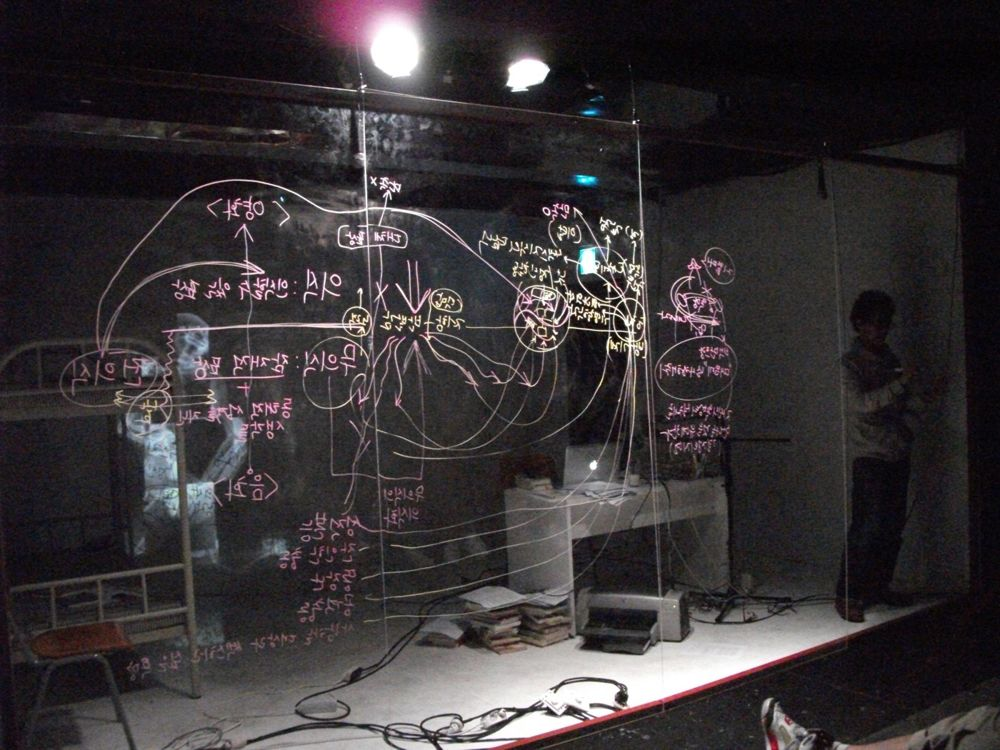

프로이트의 〈나르시시즘에 관한 서론〉을 비롯한 나르시시즘에 관한 일련의 인문학 텍스트를 바탕으로 재구성한 작품. 자기성애, 성적 이상, 자아 이상 같은 개념에서 출발해, 해박한 성적 지식과 욕구와는 달리 타인과 관계를 맺지 못하는 사람의 이야기를 그린다.
2011.5.19–29 / 연극실험실 혜화동1번지
2011.8.14–15 / 국립극단 소극장 판
2012.5.24–6.3 / 정보소극장
2012.9.1 / 그린피그 연습실 - 덴마크 오르후스 페스티벌 초청
공동구성: 윤한솔, 전성현, 김수진, 박하늘
연출: 윤한솔
출연: 윤한솔, 전성현
드라마터그: 김민승
음악: 민경현
조명: 최보윤
2012.6.14 고립된 지식, 고립된 연극의 나르시시즘에 대하여, 이경미 (네이버 블로그)
이전: 누가 무하마드 알리의 관자놀이에 미사일 펀치를 꽂았는가? | 다음: 연변엄마
아카이브로 돌아가기 | 아무 작품이나
발행일 2026.11.13